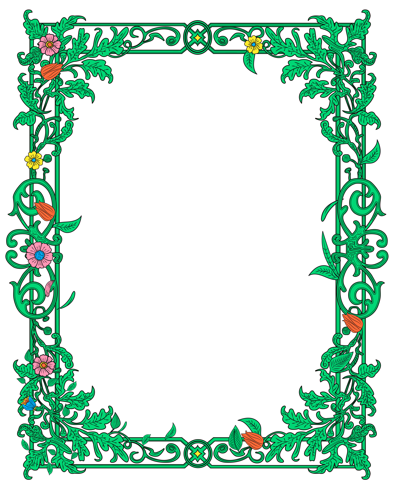

I am a versatile graphic designer
specializing in planning and development.
저는
시각디자인을 전공
하고, 대학 생활 동안
교내/교외에서 여러 디자인 활동
을 했고,
문화기획 동아리
디자인팀 팀장으로 활동
하며 리더쉽을 발휘해
팀원들을 이끈 경험
이 있습니다.
Home
About me
Skills
Projects

Introducing Me